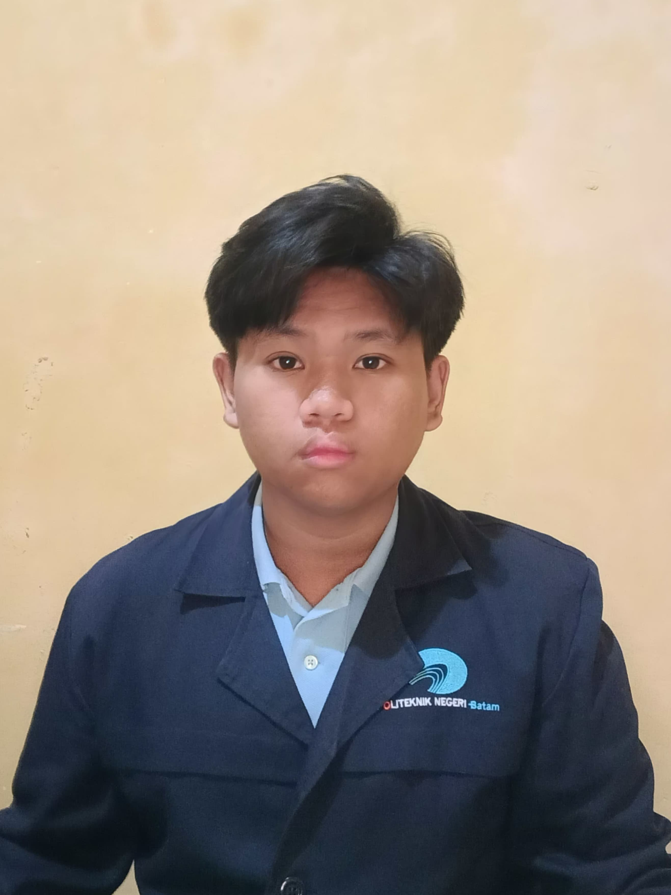

NORIS PAROMPON

| +62 813 7866 4780 |
| Batam, Kepulauan Riau |
| norisparompon004@gmail.com |
| LinkedIn |
| Github |
ABOUT ME
I am a sixth-semester student of D4 Software Engineering Technology at Polibatam with practical experience in UI/UX
design, IoT systems, and web/mobile application development using tools such as Laravel, Flutter, Figma, and Canva.
I am also experienced in configuring and troubleshooting security systems like CCTV and access control. Adaptable
and eager to learn, I consistently aim to deliver high-quality, user-focused solutions. With strong communication
skills, critical and creative thinking, and solid teamwork, I am passionate about driving innovation and bringing
positive impact through technology in real-world environments.
PROJECT EXPERIENCES
Student Attendance Web Application (SISITEKA)
UI/UX Designer & Logo Creator | Semester 1 (Sep 2022 – Jan 2023)
- Designed the user interface and user experience for a student attendance system built using PHP native and
Bootstrap.
- Created the application's logo and visual identity.
- Developed as part of a PBL (Project-Based Learning) team project.
Official Letter Management System (SISURAT)
UI/UX Designer & Logo Creator | Semester 2 (Feb 2023 – Jul 2023)
- Designed all interface elements and user experience flows using Balsamiq Wireframes.
- Created the logo and visual branding for the web-based letter submission system.
- Collaborated with a team in developing the system using Laravel.
Community Services Mobile Application (Wartech)
UI/UX Designer & Logo Creator | Semester 3 (Aug 2023 – Jan 2024)
- Designed mobile user interface and experience using Figma.
- Developed logo and iconography aligned with the app’s functionality.
- Contributed to the development of a Flutter-Firebase based citizen service app.
IoT-Based Parking Management Website (SecurePark)
UI Designer & IoT Programmer | Semester 4 (Feb 2024 – Jul 2024)
- Designed the initial web interface layout for a parking management system.
- Developed object detection logic using Python for IoT devices.
- Programmed ESP32 and integrated it with sensors and webcam for real-time monitoring.
IoT-Based Parking Management Website (ParkinTime)
Full IoT Programmer | Semester 6 (Feb 2025 – Present)
- Took full responsibility for IoT module development using Python and ESP32.
- Implemented and integrated a new parking slot booking feature into the system.
- Enhanced object detection system for improved accuracy and real-time data delivery.
- Continued and expanded the system from Semester 4 with additional functionalities and better hardware-software
integration.
INTERNSHIP EXPERIENCE
IT Technician Internship
- Installed and maintained CCTV systems (DVR/NVR), ensuring proper surveillance coverage.
- Configured Hikvision-based fingerprint access and barrier gate systems.
- Repaired and troubleshot PC hardware, switches, LAN ports, and RAM modules.
- Managed IT inventory by organizing, labeling, and maintaining network cable infrastructure.
SKILL
- Soft Skills:
- Time Management, Communication, Problem Solving, Teamwork, Critical Thinking, Creative Thinking
- Hard Skills:
- UI/UX Design, IoT Programming (Python, ESP32), CCTV & Access Control System Configuration
- Tools & Softwares:
- Visual Studio Code, PyCharm, Laragon, XAMPP, phpMyAdmin, GitHub, Firebase, Figma, Canva, Microsoft Office (Word,
Excel, PowerPoint)
LANGUAGE
EDUCATION
Batam State of Polytechnic (Polibatam)
D4 - Software Engineering Technology 2022 - Current (Expected Graduation: 2026)
- Current GPA: 3.73
- Collaborated on academic projects focused on integrated software solutions, including mobile/web apps, IoT
connectivity, backend services, and interface design.
CERTIFICATES & ACTIVITIES
-
EF SET English Certificate - CEFR Level B1 Intermediate
Education First (EF) | Issued: May 2025
-
Hack4ID KEPRI Participant - 1000 Startup Digital
Polibatam x Lintasarta | Aug 2023
-
Internship Preparation Certificate
Politeknik Negeri Batam - Career Development Center | Jul 2024
Topics: Internship Readiness, Sexual Violence Prevention, Occupational Safety (K3L)
-
3rd Place in IoT Category - PBL Expo Polibatam x2024
Politeknik Negeri Batam | Aug 2024
Participated in the Internet of Things category at the PBL Expo held at Polibatam, 5–7 August 2024.
PORTFOLIO
Scan here to see my portfolio: